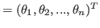
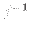
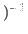
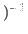
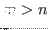
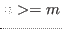
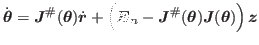
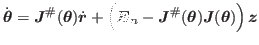
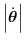
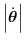

Next: 基礎ヤコビ行列 Up: ロボットの動作生成 Previous: ロボットの動作生成 Contents Index
ここで,
エンドエフェクタの位置・姿勢

は関節角度ベクトルを用いて
![[*]](crossref.png) はEquation
のように記述し,関節角度ベクトルを求める.
はEquation
のように記述し,関節角度ベクトルを求める.
におけるは一般に非線形な関数となる.
そこでを時刻tに関して微分することで,
線形な式
ヤコビ行列が正則であるとき逆行列

 を用いて
以下のようにしてこの線型方程式の解を得ることができる.
を用いて
以下のようにしてこの線型方程式の解を得ることができる.
しかし, 一般にヤコビ行列は正則でないので,
ヤコビ行列の疑似逆行列


 が用いられる(Equation ).
が用いられる(Equation ).
Equation は，
のときはEquation を，
のときはEquation を，
最小化する最小二乗解を求める問題と捉え,解を得る.
関節角速度は次のように求まる．
しかしながら, Equation に従って解を
求めると, ヤコビ行列


 がフルランクでなくなる特異点に近づく
と,
が大きくなり不安定な振舞いが生じる.
そこで, Nakamura et al.のSR-Inverse4を用いること
で, この特異点を回避する.
がフルランクでなくなる特異点に近づく
と,
が大きくなり不安定な振舞いが生じる.
そこで, Nakamura et al.のSR-Inverse4を用いること
で, この特異点を回避する.
本研究では
ヤコビ行列の疑似逆行列


 の代わりに,
Equation に示す
の代わりに,
Equation に示す
 

 を用いる.
を用いる.
これは, Equation の代わりに,
Equation を最小化する最適化問題を
解くことにより得られたものである.
ヤコビ行列


 が特異点に近づいているかの指標には
可操作度
が特異点に近づいているかの指標には
可操作度

 5が用いられる(Equation ).
5が用いられる(Equation ).
微分運動学方程式における タスク空間次元の選択行列6は見通しの良い定式化のために省略するが, 以降で導出する全ての式において 適用可能であることをあらかじめことわっておく.
2014-12-04